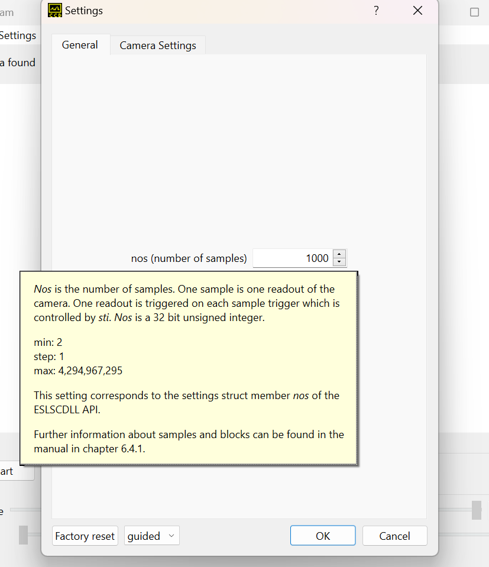
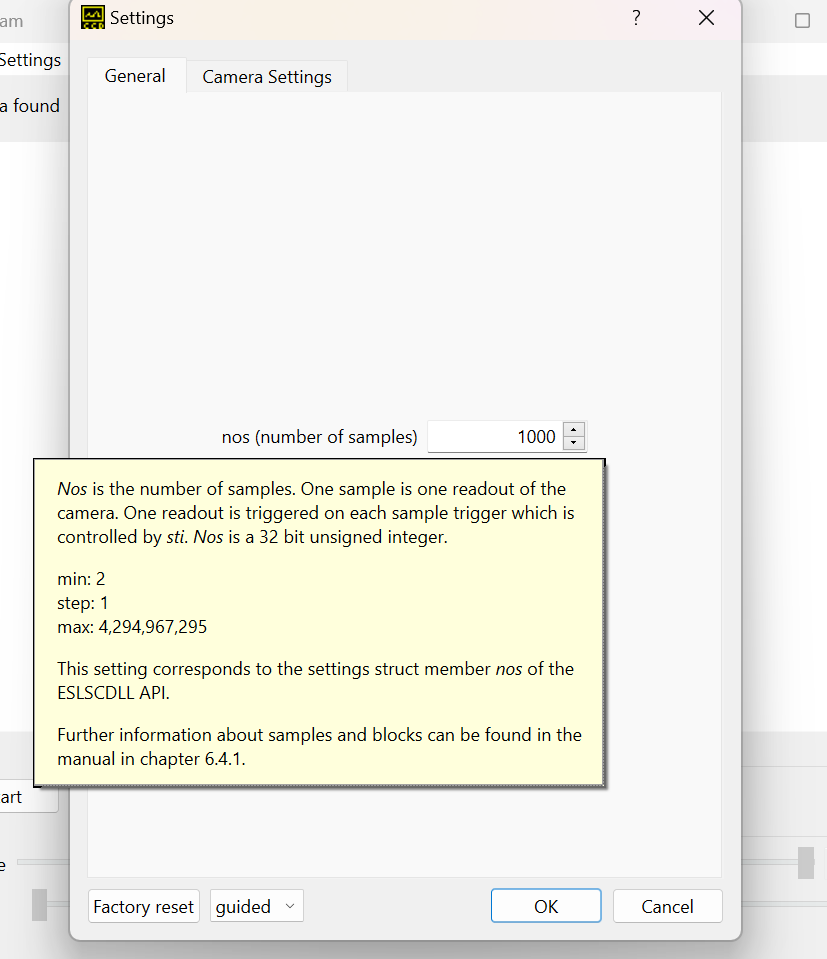

|
EBST_CAM
|
|
EBST_CAM
|
This documentation is about the software for operating the specialized line scan cameras of Entwicklungsbuero Stresing. For instructions about compiling have a look at the readme in the EBST_CAM repository. For more detailed information about your camera refer to your given manual FLbook.pdf.
Use the compiled library ESLSCDLL.dll or libESLSCDLL.so and operate the camera from your software with DLL calls. There are several examples available that are operating the camera with the DLL for LabVIEW, Python, Matlab and C. Additionally there is a fully featured GUI called Escam, written in C++ with Qt. Escam and the C example CsimpleExample are located in the EBST_CAM repository.
Have a look at the block diagrams at the bottom of this page to get an overview of the software structure.
For a simple measurement the following DLL calls should be used. For a complete API documentation go to the DLL documentation page.
After opening the program, you will be greeted by the main page. To configure the settings for the camera, open the 'Settings' tab at the top and choose 'Edit' and the 'General' tab of the settings will open. The first time you start the program on your PC, the initial values have to be imported. We have saved your setup in a config.ini file. So import this file at the first start. These values are stored then in windows (registry) and you do not need to import it again. For many elements in Escam there are additional information available through tooltips and context help. Especially in the settings dialog you can find a detailed description for every parameter in the context help. A tooltip appears after hovering with the cursor over a specific element for some seconds.

The context help can be reached through different methods:
Whats This?? button at the top of a window and then on the element of interestHelp -> Context help and then clicking on the element of interestA small pop up window will appear with a detailed explanation.

 
